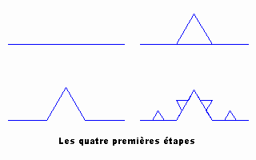
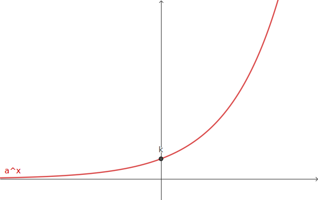
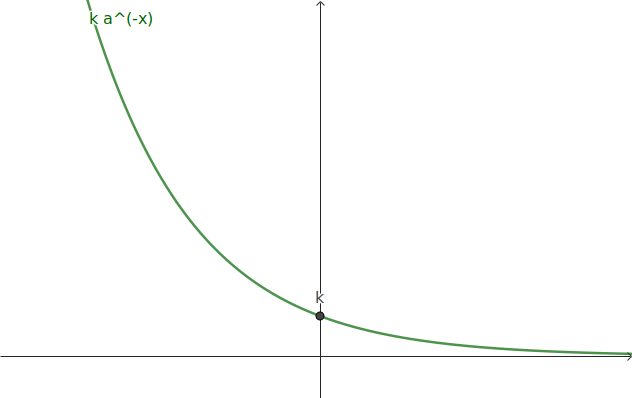
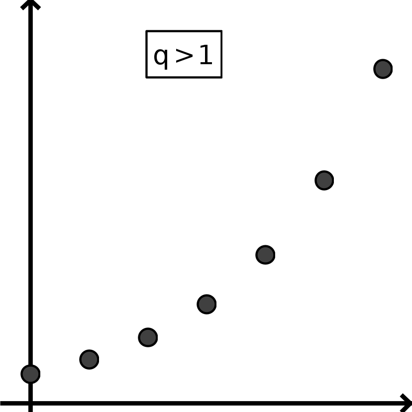
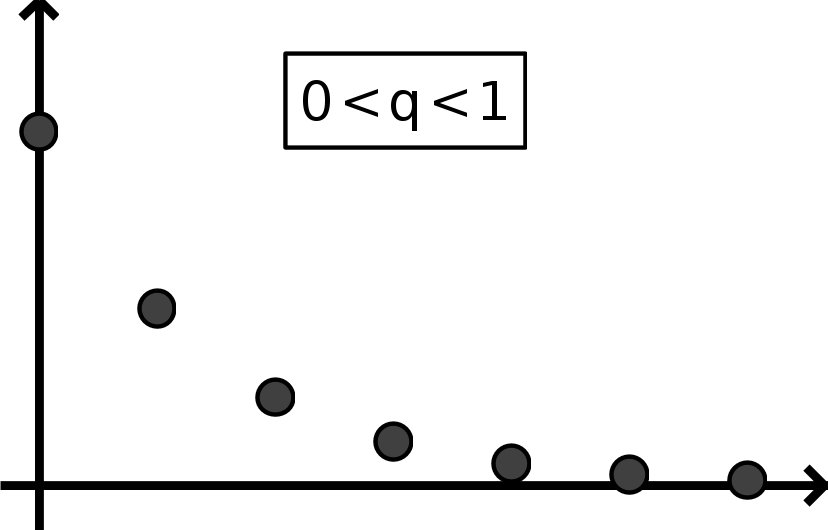
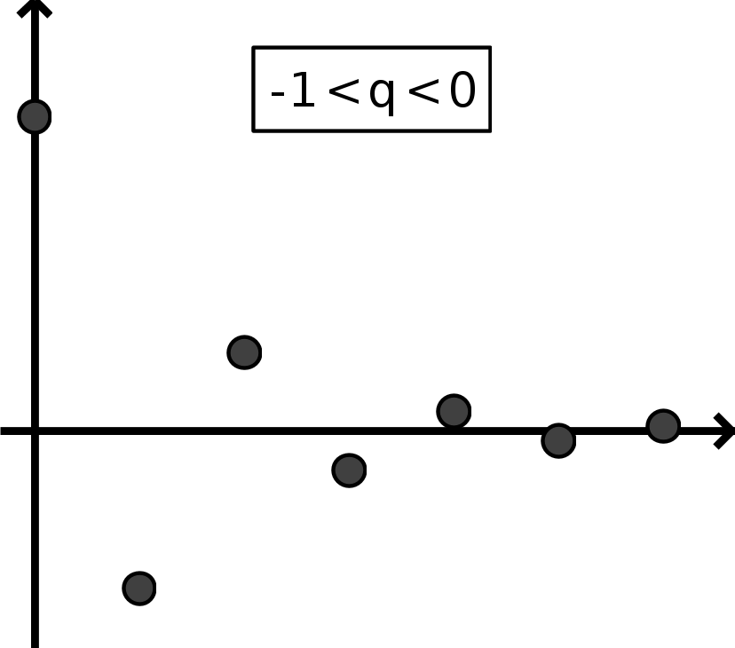
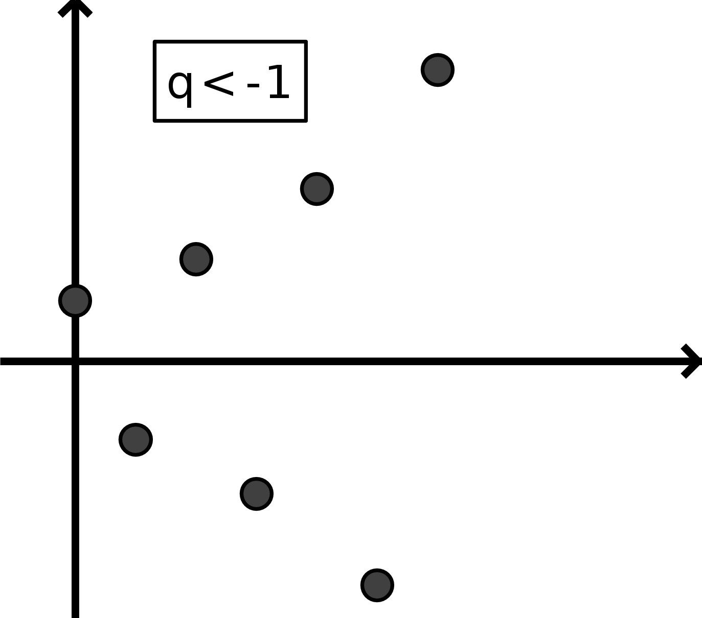
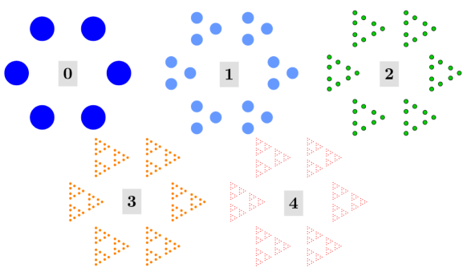
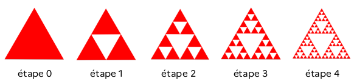
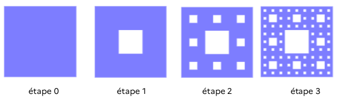

L'équation \(x^n=c\) admet une seule solution positive : \(x=c^\frac{1}{n}\).
\(x^3=64\) admet pour solution \(x=64^\frac{1}{3}=4\).
\(x^2=81\) admet pour solution (positive) \(x=81^\frac{1}{2}=9\).
Cette équation admet une autre solution, négative, qui est -9.
Puissance «un demi» est en fait la fonction racine carrée ; puissance «un tiers» est en fait la racine cubique,
etc...
Si au cours de \(n\) périodes, le taux d'évolution d'une quantité est \(t_{\textrm{global}}\), alors le
taux moyen est \(t_{\textrm{moyen}}\%=\left(1+t_{\textrm{global}}\%\right)^{\frac{1}{n}}-1\).
Démonstration : Le coefficient multiplicateur associé à une évolution de taux moyen \(t\)
pendant \(n\) périodes est
\((1+t\%)^n\), et est égal à \(1+t_{\textrm{global}}\%\) (cefficient multiplicateur associé au taux
global).
On a donc \(1+t\% = \left(1+t_{\textrm{global}}\%\right)^{\frac{1}{n}}\). En soustrayant 1 aux deux membres de
l'égalité, on obtient la formule.
Un prix augmente de 20% sur un an. Quelle est son augmentation moyenne par mois ?
Un prix baisse de 20% en un mois, puis augmente de 20% le mois suivant. La même chose se reproduit les deux mois
suivants. Quel est le taux d'évolution moyen (par mois) durant ces 4 mois ? Conseil : passer par les coefficients multiplicateurs.
La courbe de Von Koch est une fractale qui rappelle les contours d'un flocon de neige.
Quel est le taux d'évolution de la longueur de la courbe entre les étapes ? Que peut-on en dire ? En
déduire le taux d'évolution moyen de la longueur entre les étapes 1 à 1000.

Fonctions exponentielles
La base \(a\) est un nombre réel positif.
En général, on prend \(a>1\) (car \(\left(\frac{1}{a}\right)^x=a^{-x}\)).
La constante \(k\) est un nombre réel fixé ; on pourra l'appeler «valeur en 0».
La fonction \(x\mapsto k a^x\) avec \(a>1\) croit vers \(+\infty\) quand \(x\)
augmente ;
La fonction \(x\mapsto k a^{-x}\) avec \(a>1\) décroit vers \(0\) quand \(x\)
augmente ;
Elles sont symétriques par rapport à l'axe vertical.

fonction \(x\mapsto k a^x\) avec \(a>1\)

fonction \(x\mapsto k a^{-x}\) avec \(a>1\)
Date de péremption - population de bactéries
Une population de bactéries, notée \(f(t)\), donnée en millions en fonction du temps \(t\) donné en
jours
vérifie \(f(t)=0{,}3\times1.05^t\).
Tracer cette fonction en utilisant GeoGebra ou une calculatrice.
Quelle est la population initiale ?
Quand dépassera-t-elle le million d'individus ?
Sur Geogebra : tracer une droite horizontale y=1 et rechercher l'intersection avec
la
courbe. Sur une calculatrice, on pourra utiliser la fonction trace ou un tableau de valeurs.
Calculer le nombre de bactéries au bout de 15 jours, puis de 16 jours.
Calculer le taux d'évolution de la population du 15ème au 16ème jour.
Calculer le taux d'évolution de la population du 30ème au 31ème jour. Que
remarque-t-on ?
Expliquer le résultat précédent en simplifiant l'expression
\(\frac{f(t+1)}{f(t)}=\frac{0{,}3\times1.05^{t+1}}{0{,}3\times1.05^t}\).
Radioactivité et datation
Une faible proportion de noyaux atomiques constituant la matière terrestre sont instables et se désintègrent
(radioactivité).
L’instant de désintégration d’un noyau radioactif
individuel est aléatoire.
La demi-vie, notée λ (half-life en anglais) d’un noyau radioactif est la durée nécessaire pour que la moitié
des noyaux
initialement présents dans un échantillon
macroscopique se soient désintégrés.
La part de noyaux radioactifs restante dans l'échantillon est donnée par la fonction
\(f(t)=2^{\frac{-t}{\lambda}}\), où \(t\) désigne un temps (généralement en années), qui doit être donné
dans la même unité que λ.
Lors des premières visites des grottes de Lascaux dans les années 1940,
André Glory et son équipe de scientifiques entreprennent quelques relevés.
Il y trouve notamment des pointes de sagaies décorées en bois de renne ainsi
que du charbon de bois provenant de lampes.
Ces échantillons de charbons ont été analysés expérimentalement. Pour cela,
un procédé technique a permis de déterminer que dans un échantillon de
charbon (constitué uniquement de carbone), 6,05×10−12g était du carbone 14 (pour lequel λ=5734
ans) ; la masse de carbone 14 dans un échantillon de même taille produit actuellement serait de
8,14×10−11g.
Calculer la proportion de noyaux de carbone 14 qui ne sont pas encore désintégrés dans l'échantillon
prélevé.
En utilisant la fonction \(f\), en déduire une datation de cet échantillon.
Suites géométriques
Définitions et propriétés
Une suite \((u_n)\) est géométrique
s'il existe un réel \(q\) (indépendant de \(n\)) tel que pour tout rang \(n\), on a : \(u_{n+1}=q\times u_n\)
Le réel \(q\) s'appelle la raison de la suite.
On passe d'un terme de la suite au suivant en multipliant un même nombre \(q\) appelé
la
raison de
la suite ; attention : \(q\) peut être négatif.




Une suite géométrique \((u_n)\) correspond aux valeurs prises par une fonction exponentielle \(f(x)=ka^x\) pour
\(x=n\), c'est à dire pour des valeurs entières de \(x\) ; en outre, on a \(a=q\) et \(k=u_0\).
On en déduit que pour tout entier \(n\), on a \(u_n = u_0q^n\), ou (en partant de
\(n=1\)), \(u_n = u_1q^{n-1}\).
Patterns
Observer et dire si le nombre de pastilles contenues dans ce motif évolutif suit une suite
arithmétique ou géométrique.
Trouver une formule permettant de donner le nombre de pastilles contenu dans le motif à l'étape
\(n\).
Difficile : On admet que le rayon des pastilles est divisé par 3 en passant
d'une étape à l'autre.
On admet que l'aire d'une pastille à l'étape initiale est 1.
Trouver une formule permettant de donner l'aire du motif l'étape \(n\).
Que peut-on en déduire pour de très grandes valeurs de \(n\) ?

Triangle de Sierpiński
Le triangle initial mesure 10cm². Le but de l'exercice est de trouver une formule donnant l'aire du
tapis à l'étape \(n\). À partir de
quelle étape l'aire est-elle réduite de moitié ?

Tapis de Sierpiński
Le carré initial mesure 9cm de côté. Le carré/tapis de Sierpiński permet de construire des antennes
multi-fréquences de taille réduite, très utilisées par la technologie mobile.
Le but de l'exercice est de trouver une formule donnant l'aire du tapis à l'étape \(n\). À partir de
quelle étape l'aire est-elle réduite de moitié ?

Applications au tableur
Télécharger le fichier livret.ods et l'ouvrir avec
LibreOffice Calc.
On place 400€ (cellule C2) sur un compte dont les intérêts rapportent 3% (cellule
A2) par an.
Le but de l'exercice est de calculer la somme disponible (colonne C) sur le compte en
fonction des années.
Trouver la formule à recopier dans la colonne pour effectuer cette opération.
Déterminer au bout de combien de temps on réalise un bénéfice de 200€.
Déterminer au bout de combien de temps la somme de départ a doublé. Cela dépend-il de la somme initiale
?
Plus dur : On dépose, chaque année, 100€ sur le compte. L'écrire dans la cellule
A4 et adapter la formule dans la colonne C. En combien de temps la somme
initialement déposé double-t-elle ?
Virus
On appelle, et on note \(R_0\) le taux d'évolution de la contamination par un virus.
Si 400 individus sont
infectés initialement, pour \(R_0=3\%\), au bout de combien de temps le nombre d'infection sera double ?
Insérer un diagramme en barres montrant la progression.
Crédit
Les crédits à la consommation ou immobiliers indiquent un taux effectif global (ou TAEG) : lors d'un tel
crédit, chaque année, la banque applique ce taux à la somme totale restante dûe par l'emprunteur pour
calculer ses intérêts qui s'ajoutent à la somme dûe.
En utilisant et en complétant ce tableau, déterminer en
combien d'années sera remboursé un crédit de 10 000€ dont le TAEG est de 3%.
Approfondissement : Se renseigner sur ce qu'est le taux d'usure, et donner des exemples
chiffrés illustrant des situations de crédit délicates.